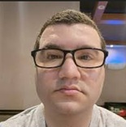

Tamer Chahine | WDD 130

Olá! Meu nome e Tamer Chahine, sou de Santa Catarina, Brasil. Gosto de tecnologia, jogar futebol, nadar, pedalar, jogar video game e cozinhar. Trabalho atualmente com logística.
Ja trabalhei em call center, auxiliar administrativo, com auditoria, gerente de patrimonio, analista de contas, segurança, Redex,